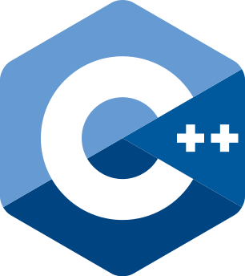

Статьи и блог:
Articles and blog:
CTF
Writeup
Upper intermediate
SPB CTF Leaked code
- статья-разбор задания "Leaked code" с SPB CTF
- explanation of "Leaked code" task from SPB CTF
C++
Metaprogramming
Hardcore
C++ Loophole
- статья на тему статической рефлексии в C++14. Разбирается техника внедрения friend-функции
- continuation of static reflection in C++14 topic. Here I describe friend function injection technique
C++
FuncProg
Upper intermediate
Pattern matching in C++14
- статья-описание реализации pattern matching в С++14
- article-description of pattern matching implementation in С++14
C++
Metaprogramming
Hardcore
C++14 reflection tricks
- в данной статье я разбираю некоторые моменты реализации статической рефлексии для C++14
- in this article I explain some points in implementation of static reflection in C++14
Публикации:
Publications:
2021
IEEE
Syntax Error Search Using Parser Combinators, 2021 IEEE Conference of Russian Young Researchers in Electrical and Electronic Engineering (ElConRus), 26-29 Jan. 2021, St. Petersburg, Moscow, Russia, DOI: 10.1109/ElConRus51938.2021.9396311
2021
IEEE
Authentication via RDP Using Electronic Identifiers, 2021 IEEE Conference of Russian Young Researchers in Electrical and Electronic Engineering (ElConRus), 26-29 Jan. 2021, St. Petersburg, Moscow, Russia, DOI: 10.1109/ElConRus51938.2021.9396471
2021
IEEE
On Luminance Noise Removal Using Convolutional Neural Network, 2021 IEEE Conference of Russian Young Researchers in Electrical and Electronic Engineering (ElConRus), 26-29 Jan. 2021, St. Petersburg, Moscow, Russia, DOI: 10.1109/ElConRus51938.2021.9396128
2021
IEEE
Comparative Analysis of Approaches to Prediction of Quantitative Parameters During a Pandemic, 2021 IEEE Conference of Russian Young Researchers in Electrical and Electronic Engineering (ElConRus), 26-29 Jan. 2021, St. Petersburg, Moscow, Russia, DOI: 10.1109/ElConRus51938.2021.9396350
Мои проекты:
My projects:

PodSerializer
- C++14 библиотека для сериализации и десериализации любой POD-структуры (и некоторых не-POD типов) без вмешательсятва в код данных структур. Здесь много шаблонов и прочей магии мата-программирования :)
- C++14 library used to serialize and deserialize any POD-structure (and some non-POD structs) with no modifications applied to them. Here I use a lot of templates and other meta-magic :)

L
- простой язык программирования, написанный на Haskell. Для синтаксического анализа применяются парсер-комбинаторы. Идея разработать данный язык пришла ко мне после написания статьи о парсер-комбинаторах.
- simple programming language written in Haskell. It uses a theory of parser combinators. The idea of developing this language came to me after writing an article about parser combinators.
AsyncNotifications
- клиент-серверное приложение, демонстрирующее возможности асинхронных RPC вызовов Windows для решения задачи подписки на события. Помимо асинхронного RPC данное приложение использует механизм пула потоков Windows.
- client-server application that demonstrates some opportunities of asynchronous RPC calls in Windows to solve the task of subscription on notifications. Alongside with RPC calls this applicaion uses Windows thread pool API.
FastReader
- библиотека для быстрого чтения файлов. Написана на С++ с применением Win32 API. В качестве основного механизма данная библиотека использует проецируемые в память файлы.
- library for fast file reading. Written in C++ with some functions from Win32 API. The main mechanism used in this library is memory mapping that allow to read files exteremely fast.
jParser
- простой (на самом деле не очень) парсер JSON, написанный на Python с использованием модуля PLY. Данная поделка выполнена в качестве саморазвития и лучшего понимания построения грамматрик формальных языков.
- simple (actually no) JSON parser written with python's PLY module. I made this program just for fun, improvement of my knowledge and better understanding of the grammar building process.
w32coro
- библиотека, реализующая механизм корутин. Совместима с C++14. Основной механизм, лежащий в основе данной библиотеки, - волокна, взаимодействие с которыми построено средствами Win32 API
- library that implements coroutines feature. It is compatible with C++14. The main underlying technique used in this library are fibers, which are manipulated through Win32 API to manually schedule them.
News
- консольная утилита (а также Flask-сервер), реализующая алгоритм прогнозирования курса цен на акции крупных компаний. Прогноз дается краткосрочный.
- console application (and Flask-server) that implements an algorithm of stocks prices prediction. The forecast is short-time.
Decrypt
- исследование возможности определения шифра простой замены по шифр-тексту с помощью многоклассового классификатора.
- my research about the possibility to distinguish different substitution ciphers based on cipher-text using multi-class classifier.
md_to_pdf
- простая консольная утилита для конвертации Markdown-файла в красивый PDF-файл. Написана на языке программирования Rust.
- simple utility to convert from markdown format into pretty PDF document. It is written in Rust programming language.
PatternMatching
- библиотека, реализующая механизм сопоставления с образцом для выбора подходящего функционального объекта на этапе компиляции по типам и количеству аргументов. Данная библиотека совместима со стандартом C++14.
- library that implements pattern matching for choosing the right functional object at compile time based on types and number of its arguments. This library is C++14 compatible and does not use any of newer standards features.
NtDll
- обертка над библиотекой ntdll.dll в Windows, которая предоставляет удобный интерфейс к функциям динамической библиотеки. Обертка сама заботится об обработке ошибок и нахождении адреса функции внутри динамической библиотеки. Данный проект находится в затяжной разработке.
- wrapper over the ntdll.dll library in Windows OS, which provides a nice interface for the dynamic library functions. The wrapper cares about error handling and searching for addresses of functions inside of DLL. This project is at the development stage.
MachineLearningModels
- реализация некоторых алгоритмов машинного обучения на Python. На данный момент реализованы линейная регрессия, полиномиальная регрессия, а также обобщенные линейная и полиномеальная регрессии.
- implementation of several machine learning algotithms written in Python. Linear and polynomial regression has been implemented alongside with generic linear and polynomial regression.
Фирсов Георгий
Firsov Georgy
Программист, интересующийся информационной безопасностью, машинным обучением и теорией компиляторов. Developer interested in information security, machine learning and compilers theory.Контакты:
Contacts:
Меня можно найти тут: You can fing me here: